Football Memory
Conosci i campioni
I 60 campioni di Football Memory
Dietro ogni carta del gioco c'è un calciatore che ha lasciato davvero il segno nella storia del calcio — Palloni d'Oro, Coppe del Mondo, record che resistono da decenni. Qui trovi una breve biografia di ciascuno di loro: da leggende assolute come Pelé e Maradona fino ai protagonisti del calcio di oggi.
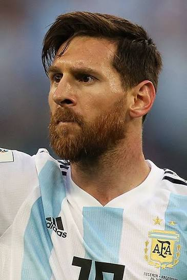
Lionel Messi
Otto Palloni d'Oro, un record che nessun altro calciatore si avvicina a eguagliare. Cresciuto nel Barcelona dove ha vinto quasi tutto il possibile, ha coronato la carriera con la Coppa del Mondo 2022 con l'Argentina, l'unico trofeo che ancora gli mancava. Considerato da molti il miglior calciatore di sempre per la sua capacità unica di dribbling, visione di gioco e continuità di rendimento per oltre quindici anni ai massimi livelli.
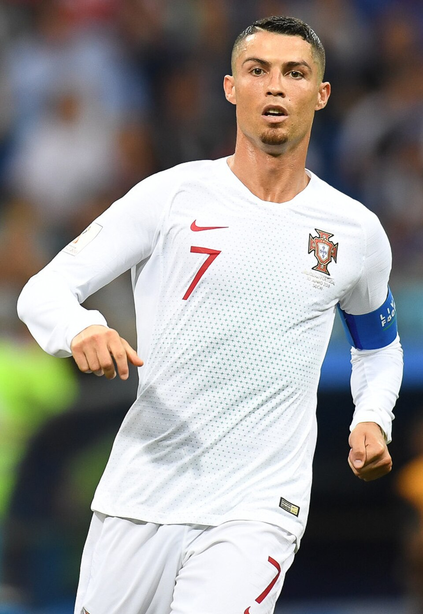
Cristiano Ronaldo
Il marcatore più prolifico nella storia del calcio maschile, con oltre 900 gol in carriera tra club e nazionale. Ha vinto cinque Palloni d'Oro e trofei con Manchester United, Real Madrid e Juventus, oltre a un Europeo con il Portogallo nel 2016. Simbolo di una dedizione atletica fuori dal comune, ha mantenuto un livello altissimo di prestazioni fino a un'età avanzata per gli standard del calcio.
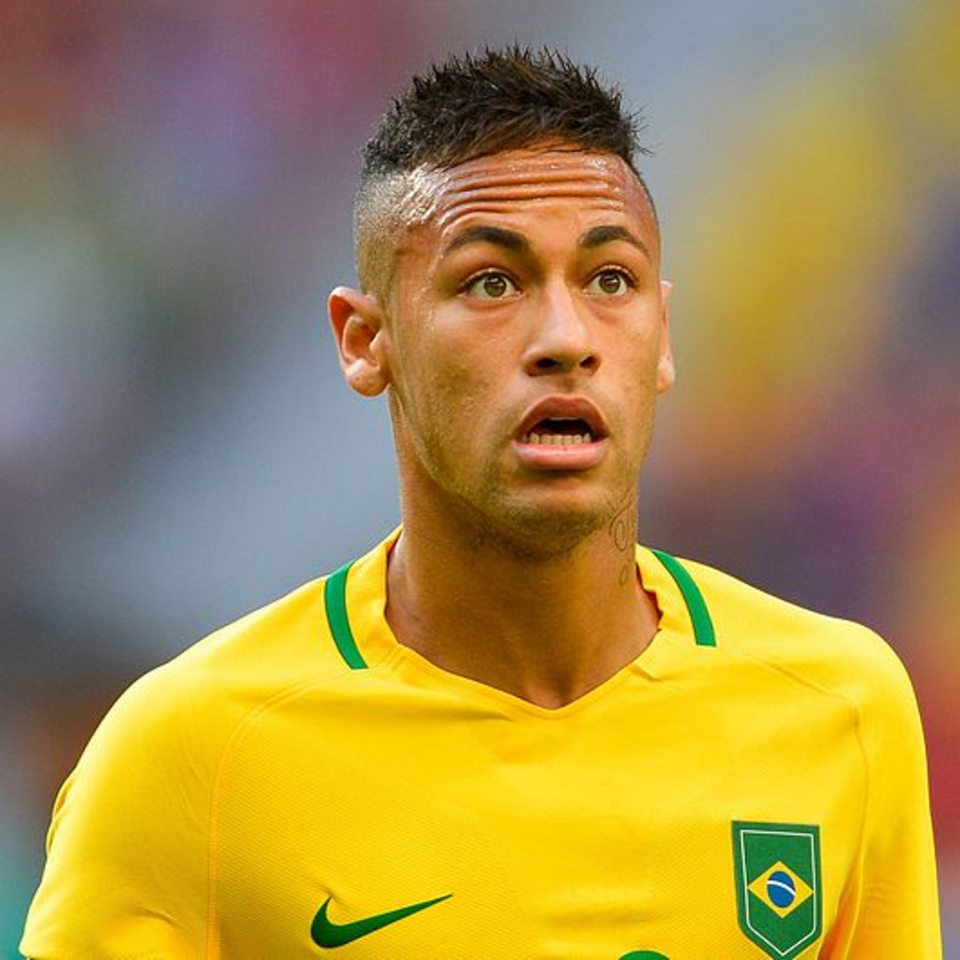
Neymar
Il calciatore brasiliano più costoso della storia al momento del suo trasferimento al Paris Saint-Germain nel 2017. Ha vinto tre Champions League con il Barcelona come parte del celebre tridente con Messi e Suárez. Noto per la tecnica individuale, la fantasia nei dribbling e per aver portato il Brasile a un'inaspettata medaglia d'oro olimpica nel 2016.
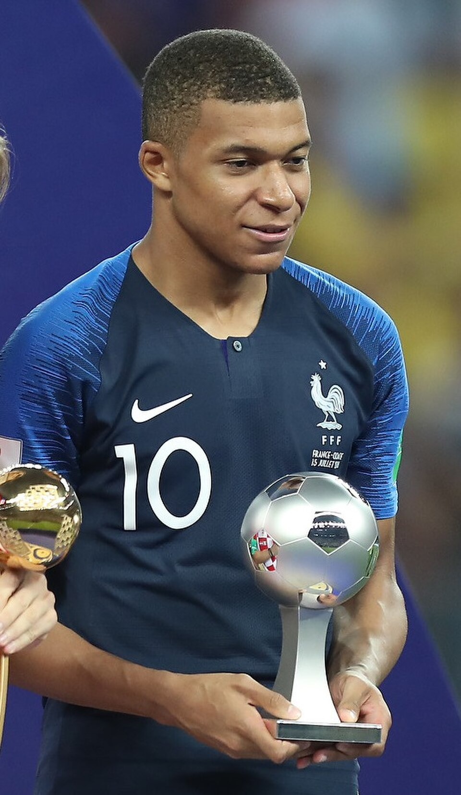
Kylian Mbappé
Diventato campione del mondo con la Francia nel 2018 a soli 19 anni, il secondo più giovane marcatore in una finale mondiale dopo Pelé. Ha guidato la Francia a una storica tripletta in finale contro l'Argentina nel Mondiale 2022. Conosciuto per una velocità di punta straordinaria unita a un fiuto del gol raro, è considerato l'erede naturale della generazione Messi-Ronaldo.
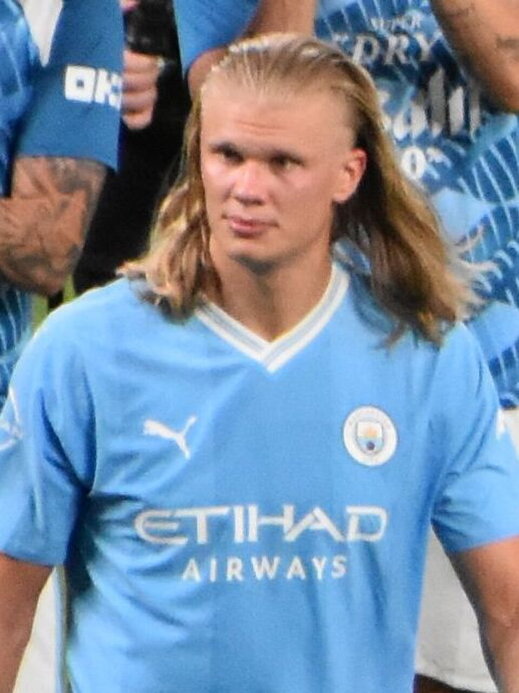
Erling Haaland
Un centravanti dai numeri quasi innaturali: ha stabilito il record di gol in una singola stagione di Premier League (36 reti) al suo primo anno in Inghilterra con il Manchester City. Con il Borussia Dortmund aveva già mostrato una capacità realizzativa fuori scala fin da giovanissimo. Fisico imponente unito a una freddezza sotto porta che lo rende uno degli attaccanti più temuti al mondo.
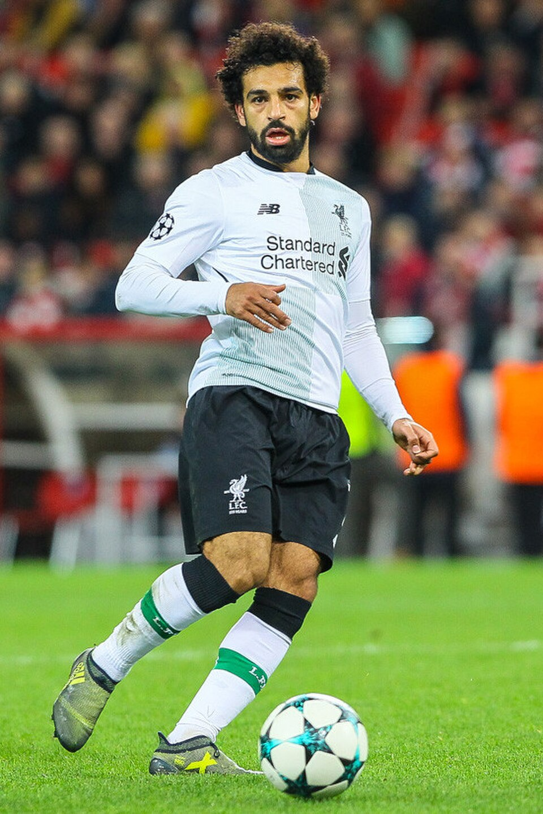
Mohamed Salah
Con il Liverpool ha riscritto i record di gol per un giocatore straniero in Premier League, contribuendo in modo decisivo alla vittoria della Champions League 2019 e del titolo di Premier League 2020. Diventato un'icona in Egitto e nel mondo arabo, unisce velocità, tecnica di finalizzazione e un lavoro difensivo spesso sottovalutato.
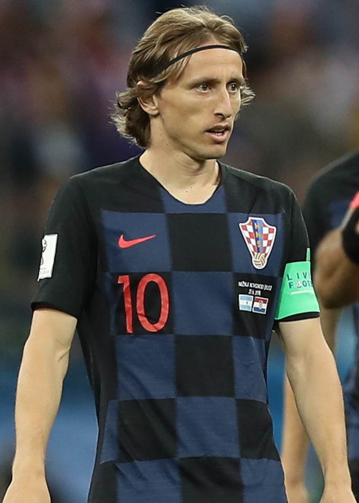
Luka Modrić
Centrocampista croato capace di vincere il Pallone d'Oro nel 2018, interrompendo un decennio di dominio assoluto tra Messi e Ronaldo. Ha guidato la Croazia alla storica finale del Mondiale 2018 e ha vinto numerose Champions League con il Real Madrid. Visione di gioco, precisione nei passaggi e straordinaria longevità ai massimi livelli lo rendono uno dei più grandi registi della sua generazione.
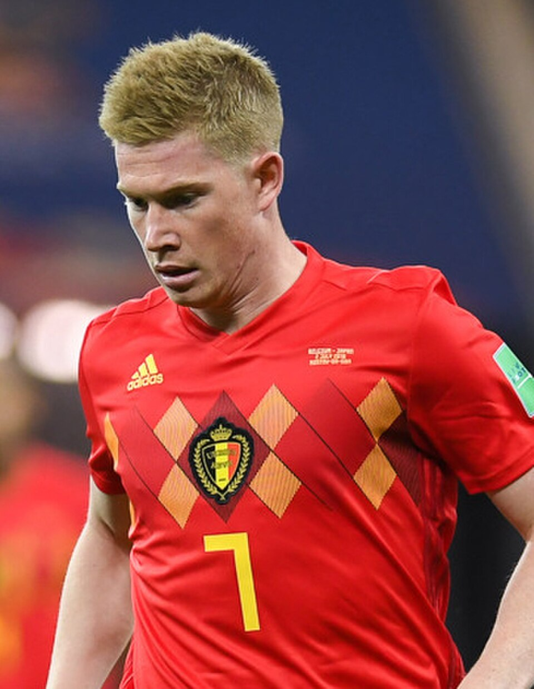
Kevin De Bruyne
Considerato uno dei migliori centrocampisti creativi della sua epoca, ha guidato il centrocampo del Manchester City in un decennio di dominio in Inghilterra, contribuendo a diversi titoli di Premier League e alla storica Champions League del 2023. Famoso per la precisione nei passaggi filtranti e per una visione di gioco che spesso anticipa l'azione di due o tre mosse.
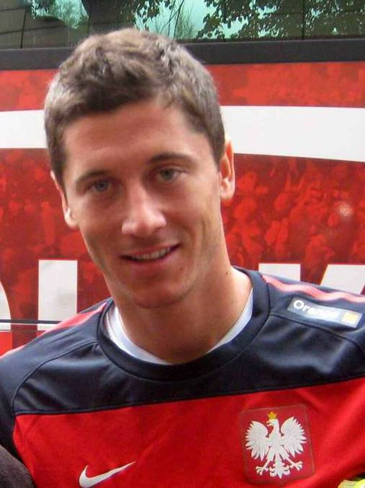
Robert Lewandowski
Uno dei centravanti più letali della storia recente, celebre per aver segnato cinque gol in appena nove minuti in una partita di Bundesliga. Con il Bayern Monaco ha vinto praticamente ogni trofeo disponibile, incluso il record di gol in una singola stagione della Bundesliga. Continuità realizzativa e intelligenza tattica nei movimenti in area lo hanno reso un incubo per le difese avversarie per oltre un decennio.
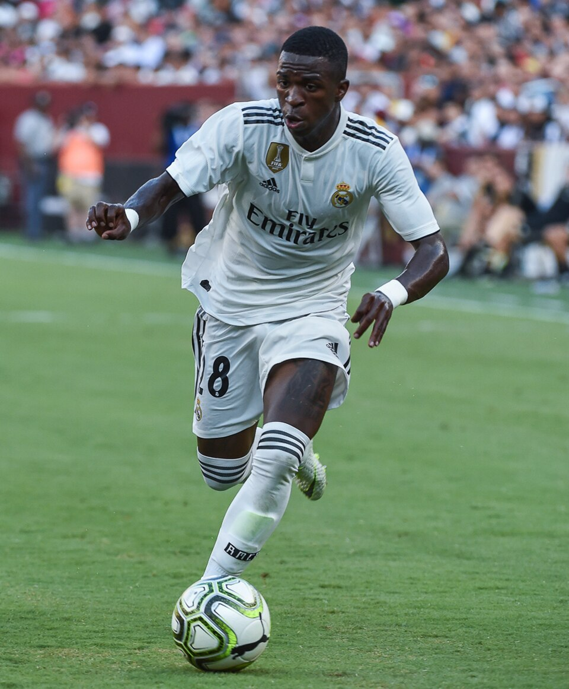
Vinícius Júnior
Ala brasiliana esplosa definitivamente con il Real Madrid, dove ha segnato il gol decisivo nella finale di Champions League 2022. Velocità, dribbling imprevedibile e un miglioramento costante nella fase realizzativa lo hanno reso uno dei giocatori più decisivi al mondo nella sua fascia d'età.

Jude Bellingham
Trasferitosi al Real Madrid da giovanissimo dopo essersi affermato al Borussia Dortmund, ha impressionato per una maturità calcistica rara alla sua età, capace di segnare gol decisivi e dominare il centrocampo con una fisicità e un tempismo negli inserimenti fuori dal comune per un centrocampista così giovane.
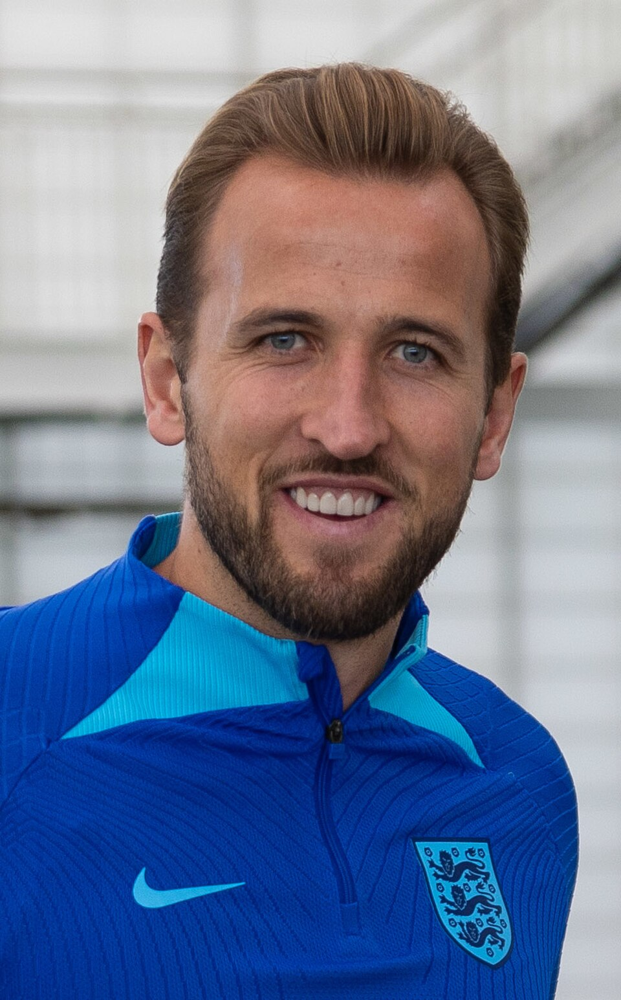
Harry Kane
Capocannoniere di lungo corso della Premier League con il Tottenham, con cui ha sfiorato più volte i trofei senza mai alzarne uno nonostante numeri realizzativi da record. Capitano dell'Inghilterra, unisce un fiuto del gol straordinario a una capacità di gioco spalle alla porta che lo rende completo sia come rifinitore che come finalizzatore.
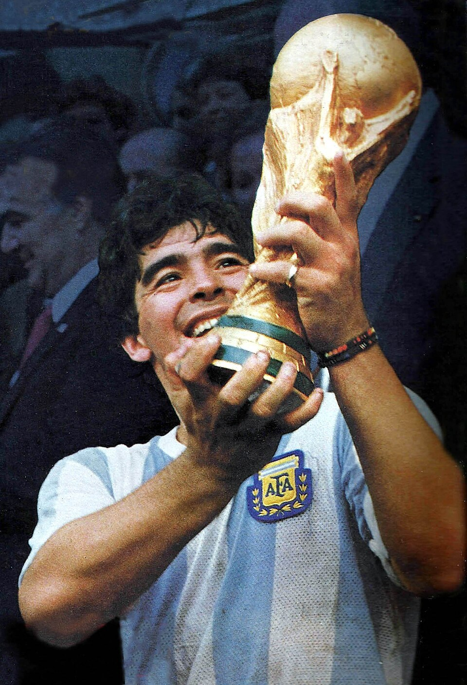
Diego Maradona
Per molti tifosi il più grande calciatore di tutti i tempi, celebre per aver praticamente vinto da solo il Mondiale 1986 con l'Argentina, incluso il leggendario gol contro l'Inghilterra ai quarti di finale. Con il Napoli ha conquistato due storici scudetti, trasformando per sempre il rapporto tra la città e il calcio. Genio assoluto del pallone e figura controversa fuori dal campo.
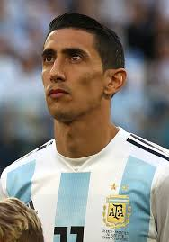
Ángel Di María
Ala argentina nota per la capacità di risolvere le partite più importanti: ha segnato il gol decisivo nella finale di Champions League 2014 con il Real Madrid e quello nella finale della Coppa America 2021, oltre a essere stato protagonista nella finale del Mondiale 2022 vinto dall'Argentina. Cross precisi e un sinistro educato lo hanno reso un'arma preziosa in ogni squadra in cui ha giocato.
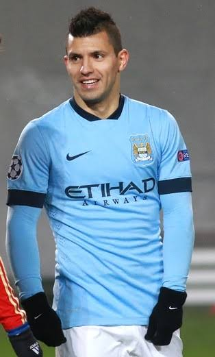
Sergio Agüero
Autore di uno dei gol più iconici della storia della Premier League, quello segnato all'ultimo respiro contro il Queens Park Rangers nel 2012 che regalò al Manchester City il primo titolo inglese dopo 44 anni. È il miglior marcatore straniero nella storia della Premier League. Un fiuto del gol e una freddezza sotto porta che lo hanno reso uno dei centravanti più prolifici della sua generazione.

Lautaro Martínez
Capitano dell'Inter e punto di riferimento offensivo dell'Argentina campione del mondo nel 2022. Capocannoniere della Serie A, unisce un lavoro instancabile per la squadra a un istinto realizzativo che lo ha reso uno degli attaccanti più continui in Europa negli ultimi anni.
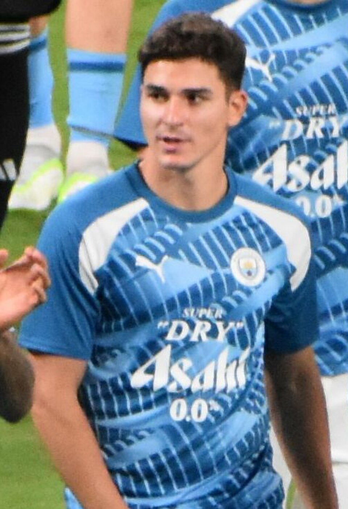
Julián Álvarez
Attaccante argentino cresciuto nel River Plate, ha vinto il Mondiale 2022 con l'Argentina da giovanissimo e si è affermato in Europa prima con il Manchester City, con cui ha vinto la Champions League, dimostrando versatilità nel giocare sia come centravanti che come seconda punta.
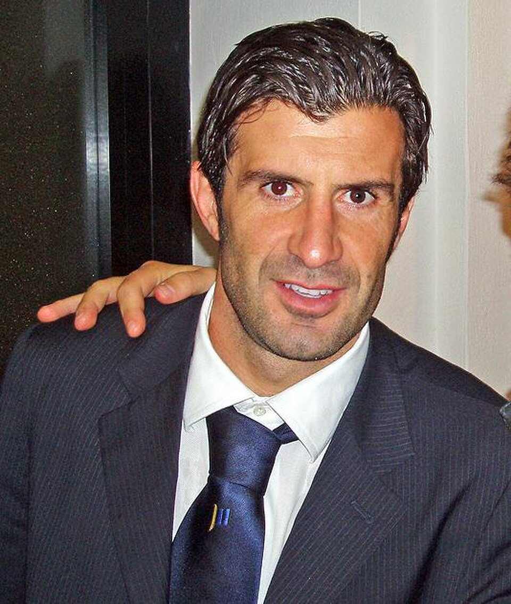
Luís Figo
Uno dei più grandi esterni offensivi della storia del calcio portoghese, ha vinto il Pallone d'Oro nel 2000. Il suo trasferimento dal Barcelona al Real Madrid nel 2000 resta uno dei più controversi e clamorosi della storia del calcio spagnolo, tanto da essere accolto a Barcellona con fischi e oggetti lanciati in campo al suo ritorno.
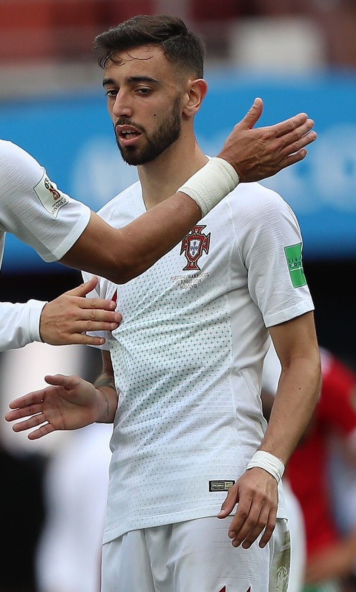
Bruno Fernandes
Centrocampista portoghese diventato rapidamente il faro creativo del Manchester United dopo il suo arrivo nel 2020, capace di unire assist, gol su punizione e rigori a una leadership riconosciuta al punto da diventarne capitano.
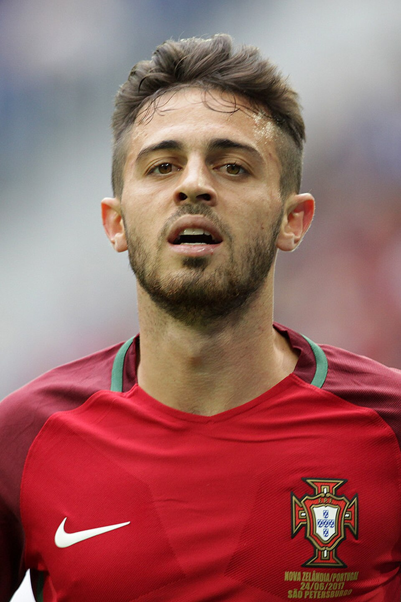
Bernardo Silva
Centrocampista portoghese di grande tecnica ed equilibrio, pilastro del Manchester City nell'era del dominio in Premier League e in Champions League. Capace di giocare in più posizioni con la stessa efficacia, è apprezzato per l'intelligenza tattica e la capacità di collegare i reparti.
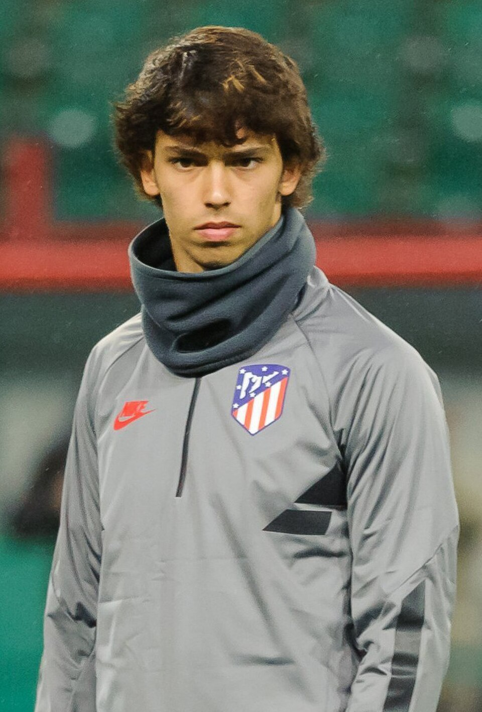
João Félix
Attaccante portoghese esploso giovanissimo nel Benfica prima di trasferirsi per una cifra record all'Atlético Madrid. Tecnica raffinata e capacità di giocare tra le linee lo hanno reso uno dei prospetti più talentuosi della sua generazione, seppur con un percorso di carriera altalenante tra diversi club.
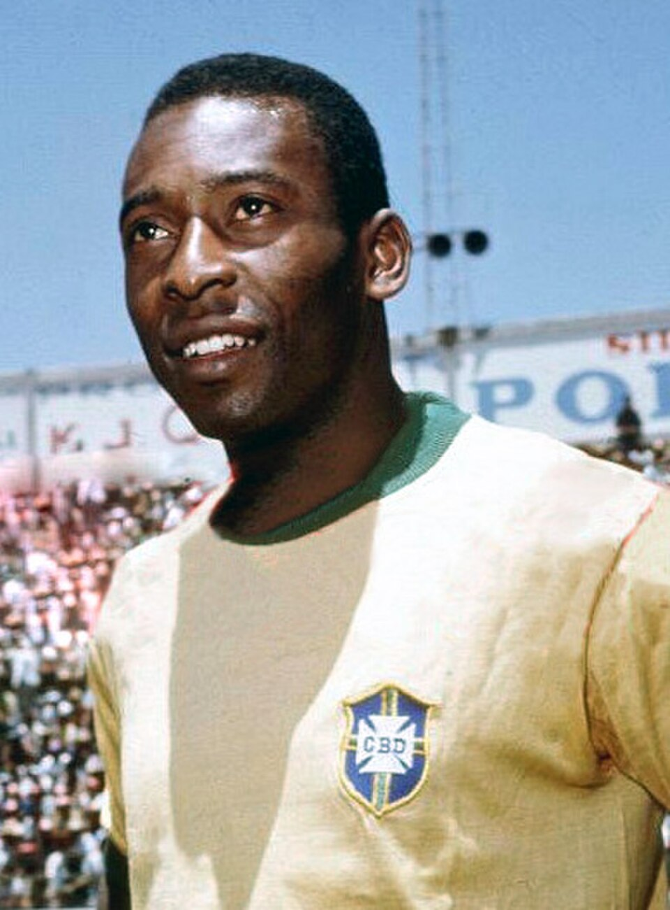
Pelé
Unico calciatore ad aver vinto tre Coppe del Mondo (1958, 1962, 1970) con il Brasile. Considerato per decenni il più grande calciatore di tutti i tempi, ha segnato oltre mille gol in carriera secondo i conteggi ufficiali del club Santos. Il suo nome è diventato sinonimo stesso di genio calcistico in tutto il mondo.
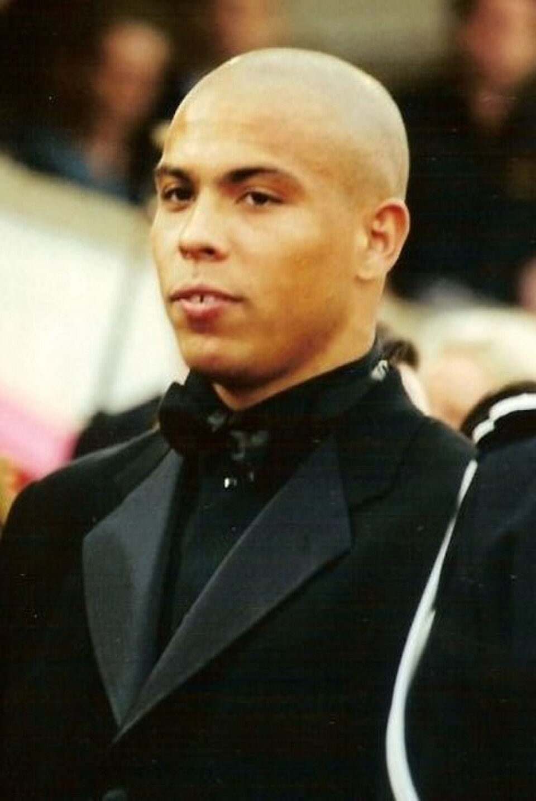
Ronaldo Nazário
Conosciuto semplicemente come 'il Fenomeno', è stato uno degli attaccanti più devastanti nella storia del calcio prima di una serie di gravi infortuni al ginocchio che ne hanno condizionato la carriera. Ha vinto due Coppe del Mondo con il Brasile (1994 da riserva, 2002 da protagonista assoluto con otto gol) e due Palloni d'Oro.
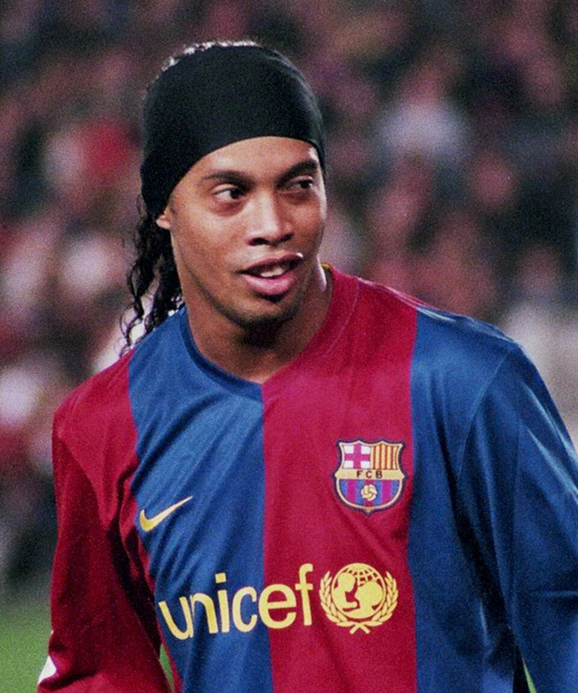
Ronaldinho
Simbolo del calcio spettacolo e della fantasia sudamericana, ha vinto il Pallone d'Oro nel 2005 e la Champions League con il Barcelona nel 2006. Il suo sorriso in campo e i tocchi di prima impossibili lo hanno reso amato dai tifosi di ogni squadra, non solo dai suoi.
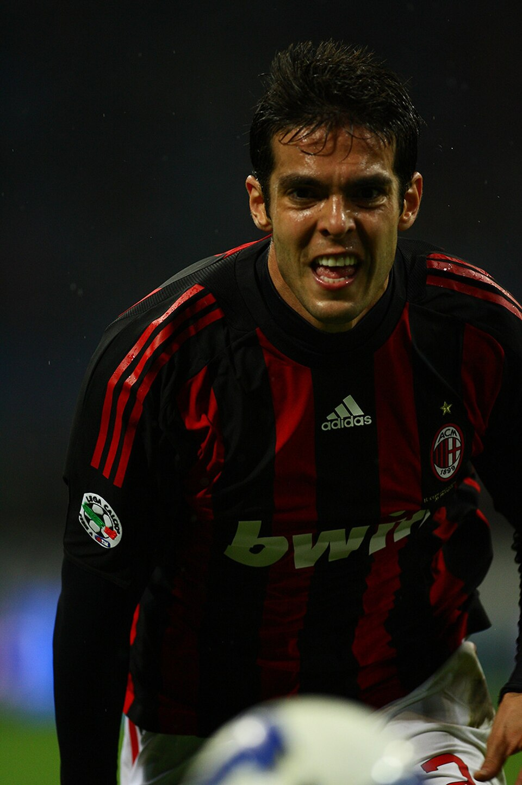
Kaká
Vincitore del Pallone d'Oro nel 2007, anno in cui trascinò il Milan alla vittoria della Champions League segnando gol decisivi in tutta la competizione. Tecnica pulita, corsa elegante e un tiro potente lo hanno reso uno dei trequartisti più completi della sua epoca.

Rodrygo
Attaccante brasiliano cresciuto nelle giovanili del Santos, lo stesso club di Pelé, prima di affermarsi al Real Madrid. Capace di segnare gol pesanti nei momenti decisivi delle competizioni europee, unisce velocità e freddezza sotto porta a un'ottima tecnica di base.
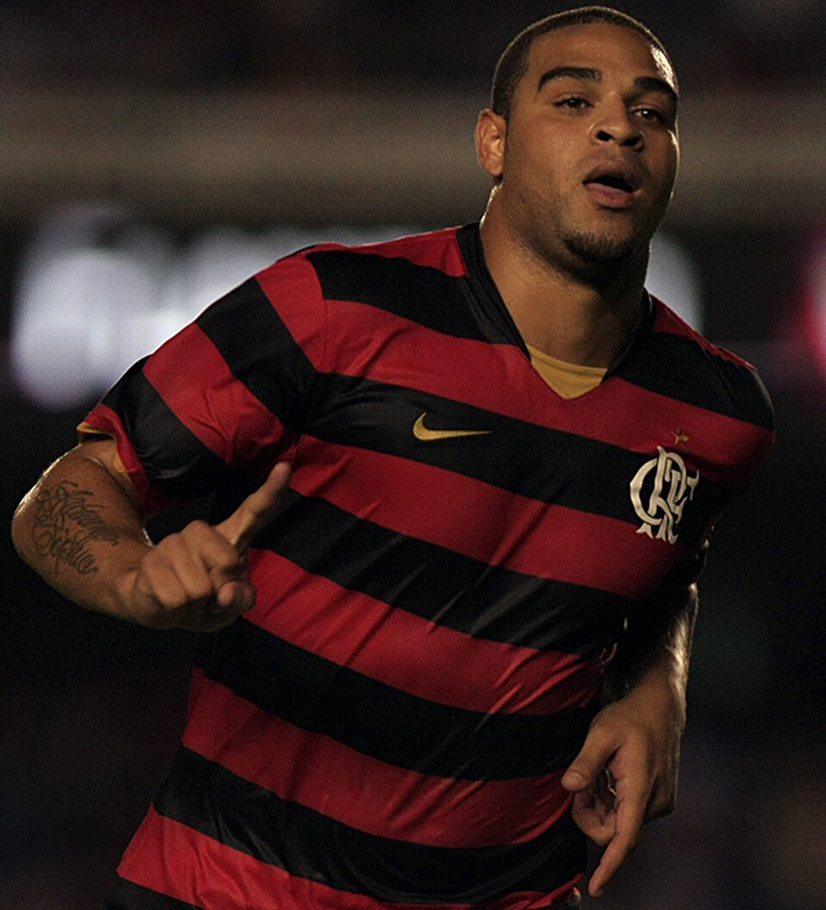
Adriano
Centravanti brasiliano soprannominato 'l'Imperatore' per la potenza fisica e la forza del tiro. Con l'Inter visse una stagione da protagonista assoluto a metà degli anni 2000, prima che problemi personali ne condizionassero il prosieguo di una carriera che sembrava destinata a raggiungere i vertici assoluti del calcio mondiale.
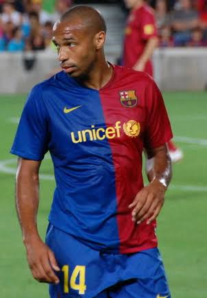
Thierry Henry
Capocannoniere storico dell'Arsenal, ha fatto parte della leggendaria squadra 'Invincibles' che vinse la Premier League 2003-04 senza perdere una partita. Campione del mondo con la Francia nel 1998, unisce velocità, eleganza nel tocco e freddezza sotto porta in una combinazione che lo rende uno dei migliori attaccanti nella storia della Premier League.
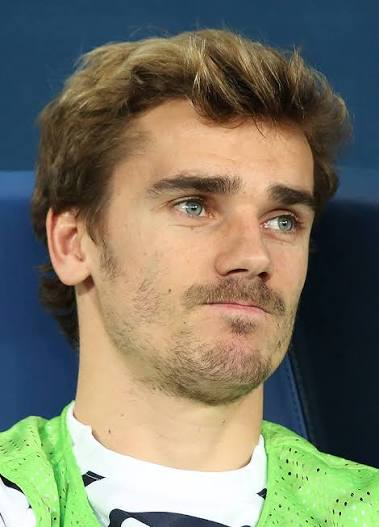
Antoine Griezmann
Attaccante francese elemento chiave della nazionale campione del mondo 2018, dove fu tra i migliori in campo nel torneo. Con l'Atlético Madrid ha vinto una Liga e un'Europa League, distinguendosi per la capacità di segnare, servire assist e lavorare instancabilmente per la squadra.

N'Golo Kanté
Centrocampista francese diventato il simbolo del lavoro difensivo silenzioso e prezioso: ha vinto la Premier League sia con il Leicester City nella storica stagione 2015-16 sia l'anno successivo con il Chelsea, oltre al Mondiale 2018 con la Francia e alla Champions League 2021.
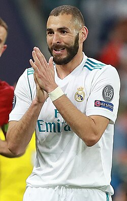
Karim Benzema
Attaccante francese diventato leader assoluto del Real Madrid dopo la partenza di Cristiano Ronaldo, culminando con la vittoria del Pallone d'Oro nel 2022 grazie a una stagione da protagonista nella conquista della Champions League. Intelligenza tattica e capacità di far giocare la squadra lo hanno reso uno dei centravanti più completi della sua generazione.
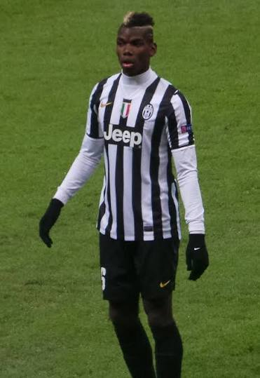
Paul Pogba
Centrocampista francese dal fisico imponente unito a una tecnica sopraffina per il suo ruolo, ha vinto il Mondiale 2018 con la Francia. Con la Juventus ha conquistato numerosi scudetti prima del clamoroso ritorno al Manchester United, diventando uno dei centrocampisti più discussi e seguiti mediaticamente della sua generazione.
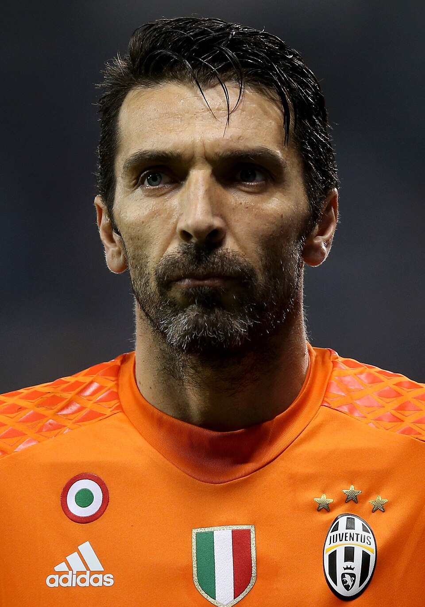
Gianluigi Buffon
Uno dei portieri più forti e longevi nella storia del calcio, campione del mondo con l'Italia nel 2006 dove fu eletto miglior portiere del torneo. Ha difeso i pali della Juventus per gran parte di una carriera durata oltre vent'anni ai massimi livelli, diventando un simbolo di continuità e professionismo.
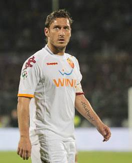
Francesco Totti
Bandiera assoluta della Roma, per cui ha giocato l'intera carriera senza mai vestire un'altra maglia in Serie A. Campione del mondo con l'Italia nel 2006, capocannoniere di una Serie A e capitano storico giallorosso, è considerato uno dei simboli più autentici della fedeltà a una maglia nel calcio moderno.
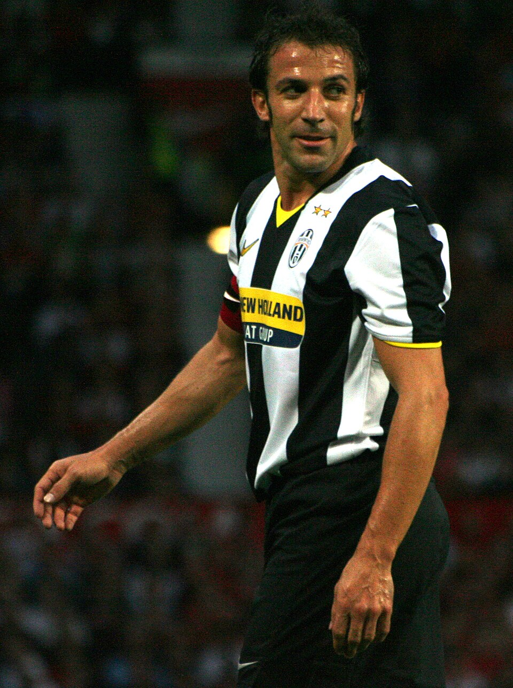
Alessandro Del Piero
Bandiera della Juventus per oltre diciannove stagioni, ha vinto tutto il possibile a livello di club, inclusa la Champions League 1996. Campione del mondo con l'Italia nel 2006, il suo mancino e la capacità di segnare gol spettacolari lo hanno reso uno degli attaccanti italiani più amati di sempre.
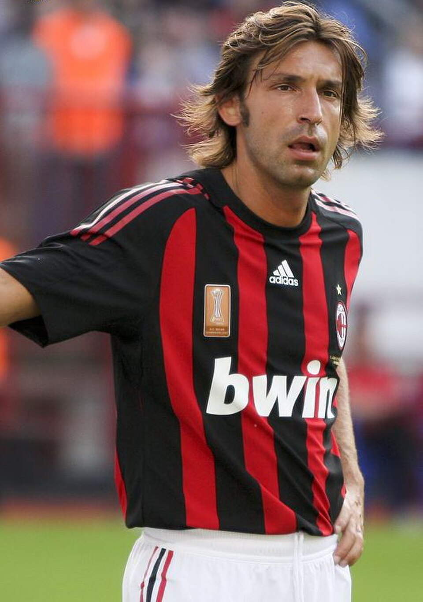
Andrea Pirlo
Regista di centrocampo dal tocco elegante e dalla visione di gioco superiore alla media, ha vinto due Champions League con il Milan e il Mondiale 2006 con l'Italia, dove fu tra i protagonisti assoluti. Con la Juventus ha vinto quattro scudetti consecutivi, reinventandosi da trequartista a regista arretrato con un successo raro nel calcio.
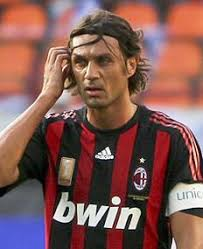
Paolo Maldini
Considerato uno dei migliori difensori della storia del calcio, ha giocato l'intera carriera con il Milan per venticinque stagioni, vincendo cinque Champions League. Eleganza in campo, tempismo nei anticipi e una carriera praticamente priva di cartellini rossi lo rendono un modello assoluto per generazioni di difensori.
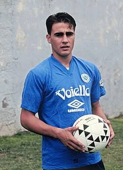
Fabio Cannavaro
Difensore centrale campione del mondo con l'Italia nel 2006 come capitano, anno in cui vinse anche il Pallone d'Oro, un riconoscimento raro per un difensore. Leadership, capacità di lettura del gioco e affidabilità nei momenti decisivi lo hanno reso un simbolo del calcio difensivo italiano.
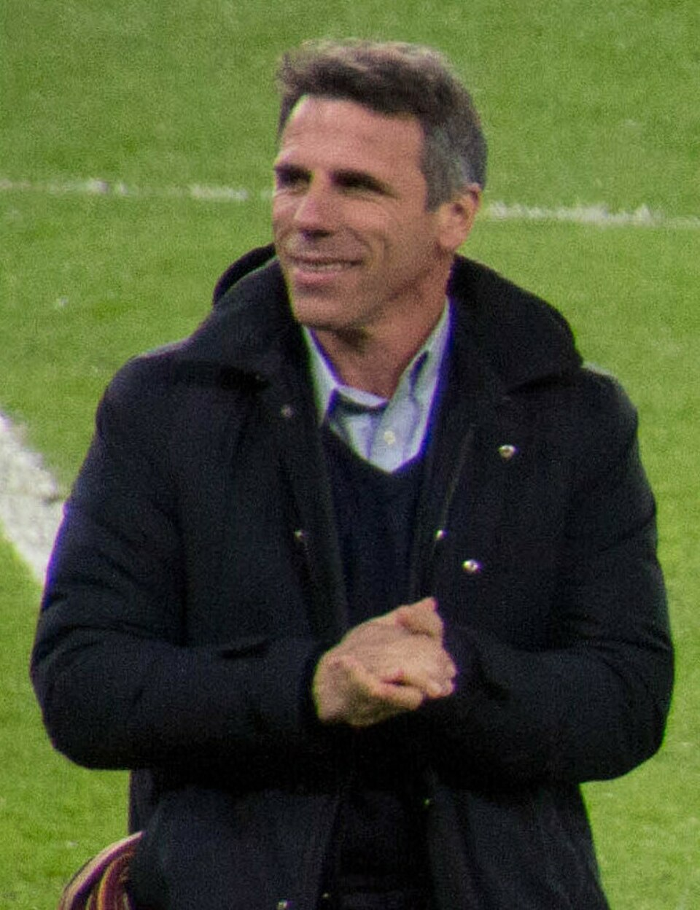
Gianfranco Zola
Fantasista italiano diventato un'icona del Chelsea negli anni '90, votato dai tifosi come il miglior giocatore nella storia del club. Tecnica sopraffina nei calci piazzati e un'intelligenza tattica fuori dal comune nonostante una statura non da centravanti lo hanno reso uno dei trequartisti italiani più amati all'estero.
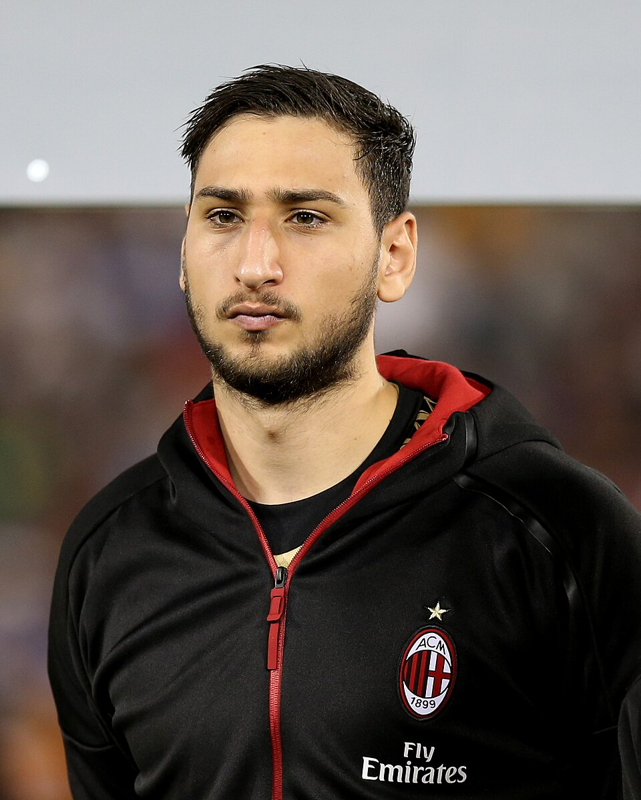
Gianluigi Donnarumma
Portiere italiano esploso giovanissimo con il Milan, di cui è diventato titolare a soli sedici anni. Ha vinto l'Europeo 2021 con l'Italia, venendo eletto miglior giocatore del torneo, un riconoscimento raro per un portiere.
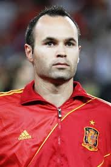
Andrés Iniesta
Autore del gol che ha regalato alla Spagna il primo Mondiale della sua storia, nella finale del 2010 contro l'Olanda. Con il Barcelona ha vinto praticamente ogni trofeo possibile, distinguendosi per l'eleganza nel palleggio e una capacità unica di trovare spazi impossibili in mezzo al campo.
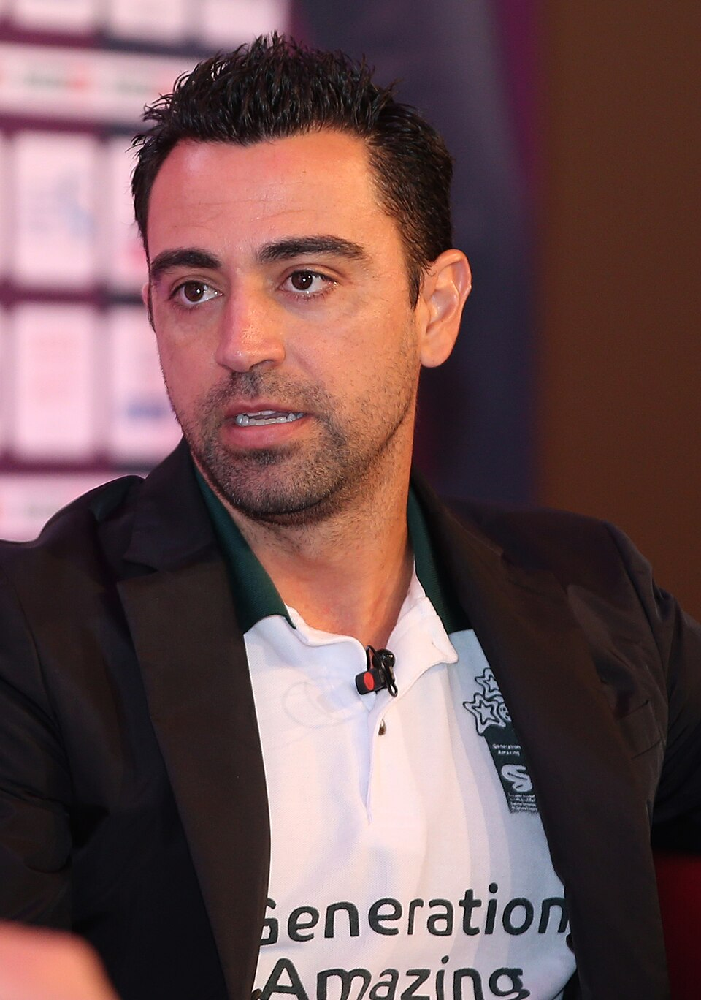
Xavi
Regista di centrocampo considerato l'architetto del Barcelona e della Spagna dell'era del tiki-taka, con cui ha vinto due Europei e un Mondiale. Record di passaggi completati e una visione di gioco superiore lo hanno reso l'esempio più puro del calcio di possesso praticato a inizio anni 2010.
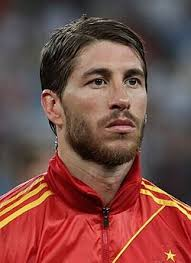
Sergio Ramos
Difensore centrale spagnolo tra i più vincenti della storia, con cinque Champions League conquistate con il Real Madrid. Celebre per i gol decisivi segnati proprio nei momenti più importanti, incluso quello al 93' minuto nella finale di Champions League 2014 che ribaltò le sorti della partita.
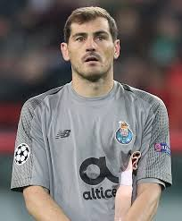
Iker Casillas
Portiere spagnolo capitano della nazionale campione del mondo 2010 e di due Europei consecutivi. Con il Real Madrid ha vinto tre Champions League, distinguendosi per riflessi straordinari e una capacità di parare i rigori che lo ha reso decisivo in innumerevoli partite chiave.
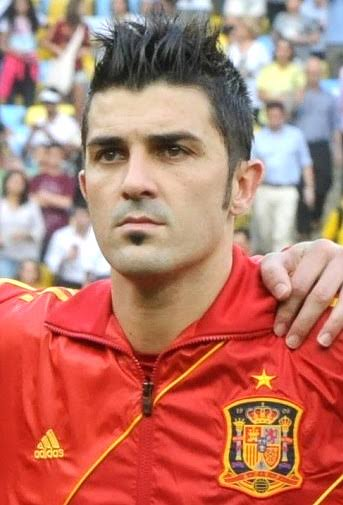
David Villa
Capocannoniere storico della nazionale spagnola, ha segnato gol decisivi nel percorso che ha portato la Spagna a vincere l'Europeo 2008 e il Mondiale 2010. Freddezza sotto porta e capacità di giocare sia da centravanti che da esterno lo hanno reso un attaccante completo per club come Valencia e Barcelona.
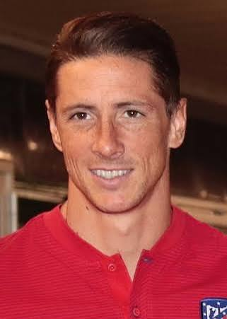
Fernando Torres
Attaccante spagnolo diventato idolo dei tifosi del Liverpool grazie a una potenza fisica unita a una tecnica di finalizzazione precisa. Ha segnato il gol decisivo nella finale dell'Europeo 2008 vinto dalla Spagna, contribuendo poi anche al trionfo mondiale del 2010.
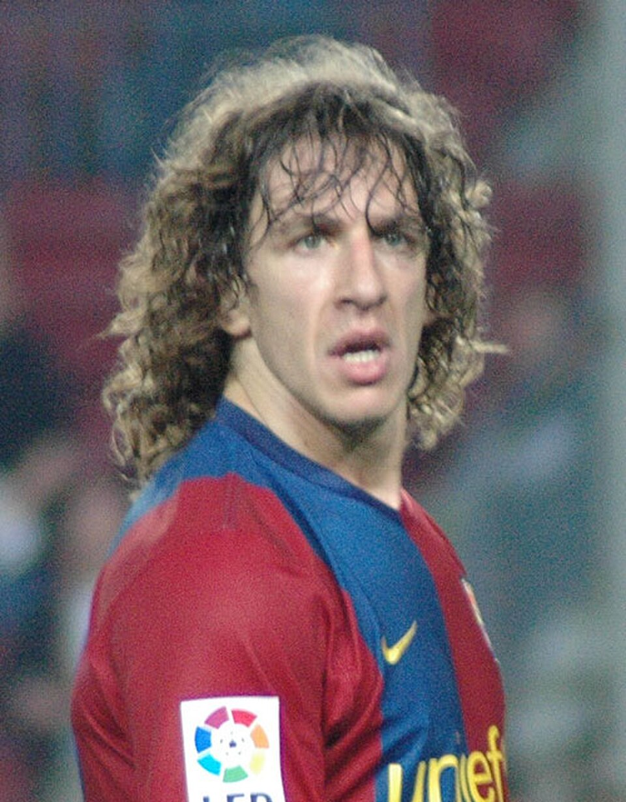
Carles Puyol
Difensore centrale simbolo di grinta e leadership nel Barcelona degli anni d'oro, capitano della squadra durante l'era di massimo successo internazionale. Capitano della Spagna campione del mondo 2010, la sua immagine con i capelli lunghi e la fascia al braccio è diventata iconica.
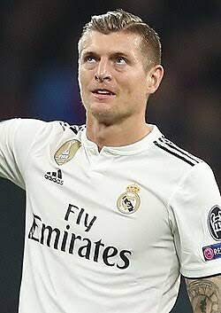
Toni Kroos
Centrocampista tedesco tra i più vincenti della sua generazione, con sei Champions League conquistate tra Bayern Monaco e Real Madrid. Campione del mondo con la Germania nel 2014, la precisione nei passaggi a lunga distanza lo ha reso uno dei registi più affidabili del calcio europeo.
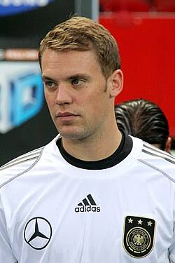
Manuel Neuer
Portiere tedesco che ha rivoluzionato il ruolo introducendo lo stile del 'portiere-libero', capace di agire come un difensore aggiunto fuori dall'area. Campione del mondo con la Germania nel 2014, con il Bayern Monaco ha vinto ripetutamente la Bundesliga e la Champions League.
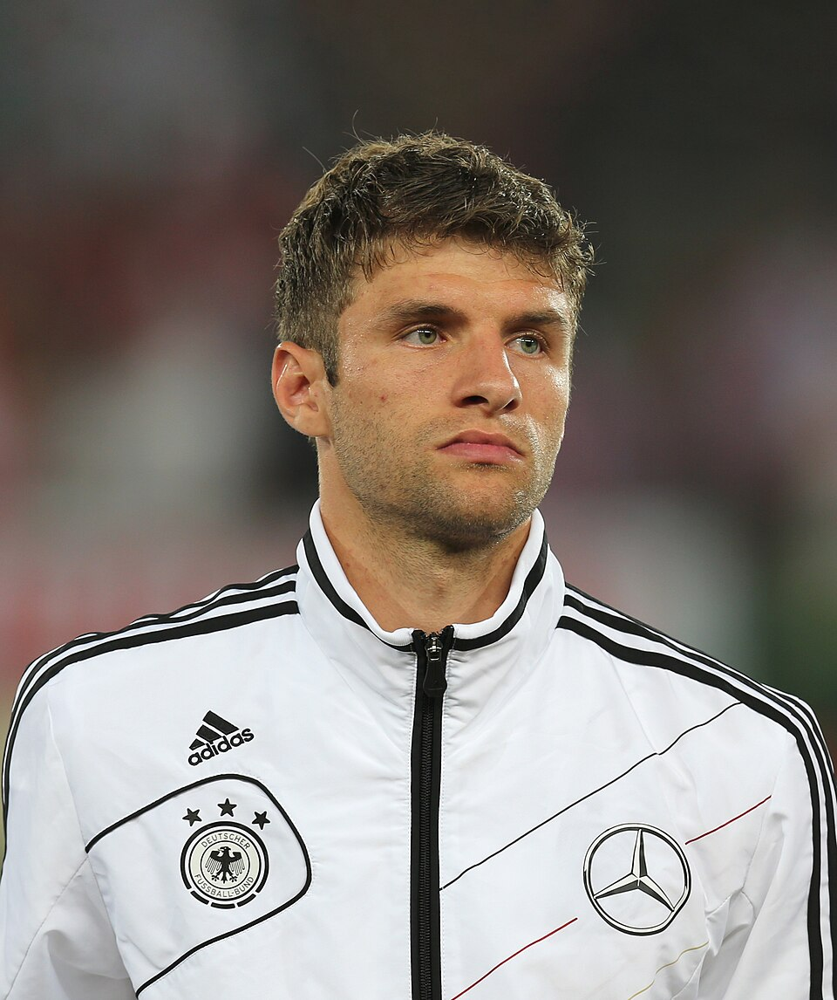
Thomas Müller
Attaccante tedesco dal fiuto del gol imprevedibile, capace di trovarsi sempre nel posto giusto al momento giusto, tanto da aver coniato per lui il termine 'Raumdeuter' (interprete dello spazio). Campione del mondo con la Germania nel 2014 e vincitore di numerose Champions League con il Bayern Monaco.
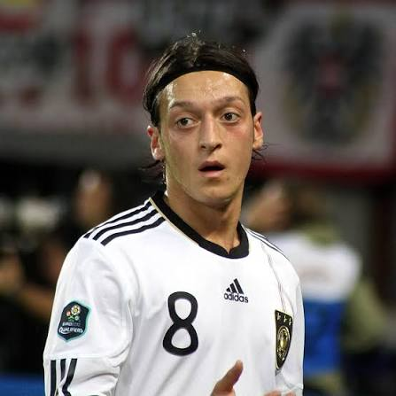
Mesut Özil
Centrocampista trequartista tedesco dalla visione di gioco sopraffina, protagonista della Germania campione del mondo 2014 con assist decisivi lungo tutto il torneo. Con l'Arsenal è stato per anni il rifinitore più prolifico della Premier League in termini di assist.
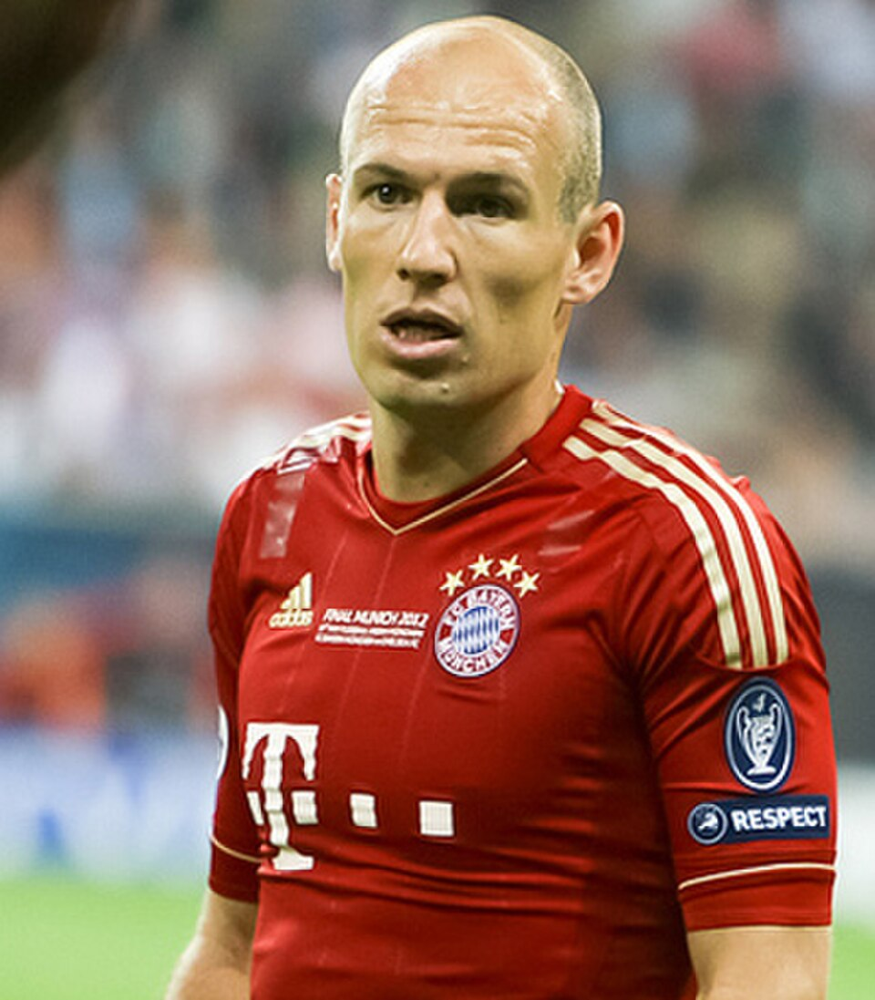
Arjen Robben
Ala olandese famosa per il taglio dal lato destro verso il centro seguito da un tiro sul palo lontano, una giocata così riconoscibile da essere prevedibile per gli avversari eppure quasi impossibile da fermare. Con il Bayern Monaco ha vinto la Champions League 2013, coronando una carriera di altissimo livello tra Real Madrid, Chelsea e Bayern.
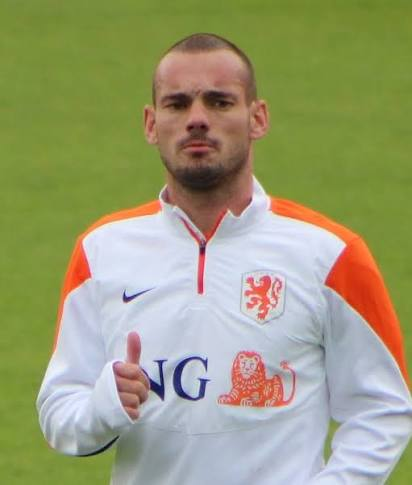
Wesley Sneijder
Centrocampista olandese protagonista assoluto della storica tripletta dell'Inter di Mourinho nel 2010 (Scudetto, Coppa Italia, Champions League). Tecnica raffinata nei calci piazzati e capacità di incidere nei momenti decisivi lo hanno reso uno dei trequartisti più forti della sua generazione.
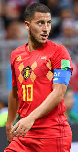
Eden Hazard
Ala belga considerata tra le più talentuose della sua generazione durante gli anni al Chelsea, dove ha vinto due Premier League e un'Europa League con prestazioni da singolo giocatore capace di risolvere le partite. Dribbling elegante e cambio di passo imprevedibile lo hanno reso uno dei calciatori più difficili da marcare in Europa.
Sergio Busquets
Centrocampista spagnolo considerato tra i migliori registi difensivi della storia recente, elemento chiave del Barcelona e della Spagna dell'era del tiki-taka. Capacità di lettura del gioco e semplicità nelle giocate lo hanno reso fondamentale per far funzionare un centrocampo tecnico come pochi altri.
Cesc Fàbregas
Centrocampista spagnolo diventato capitano dell'Arsenal giovanissimo, per poi tornare al Barcelona con cui ha vinto la Liga e la Champions League. Campione del mondo con la Spagna nel 2010, la sua capacità di verticalizzare il gioco lo ha reso uno dei registi offensivi più efficaci della sua generazione.
David Beckham
Centrocampista inglese celebre per la precisione nei calci piazzati e nei cross, capace di trasformare punizioni dirette in gol spettacolari. Ha vinto la Champions League con il Manchester United nella storica tripletta del 1999, diventando una delle figure più globalmente riconoscibili nella storia del calcio.
Marco Reus
Centrocampista offensivo tedesco, bandiera del Borussia Dortmund per gran parte della carriera nonostante numerosi infortuni che ne hanno condizionato la continuità. Tecnica raffinata e capacità realizzativa lo hanno reso uno dei giocatori più amati dai tifosi gialloneri.
Luis Suárez
Attaccante uruguaiano dal fiuto del gol fuori dal comune, ha vinto la Champions League con il Barcelona formando insieme a Messi e Neymar uno dei tridenti più prolifici della storia. Capocannoniere della Premier League con il Liverpool, unisce tecnica, aggressività agonistica e un'intelligenza tattica nei movimenti che lo hanno reso decisivo in ogni squadra in cui ha giocato.
Zlatan Ibrahimović
Attaccante svedese dalla personalità straripante quanto il suo talento, ha vinto titoli nazionali in quattro paesi diversi (Olanda, Italia, Spagna, Francia), un record di versatilità internazionale più unico che raro. Tecnica sopraffina per la sua stazza fisica e gol spettacolari lo hanno reso una leggenda ovunque abbia giocato.